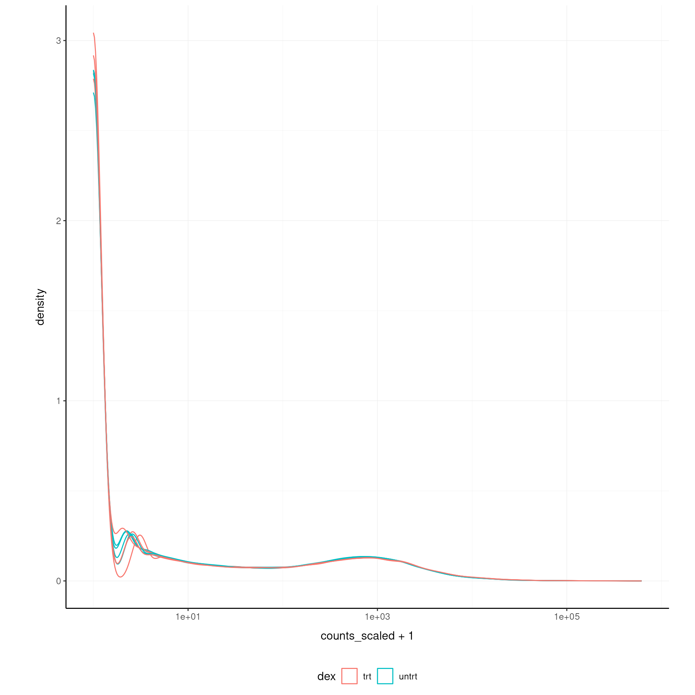
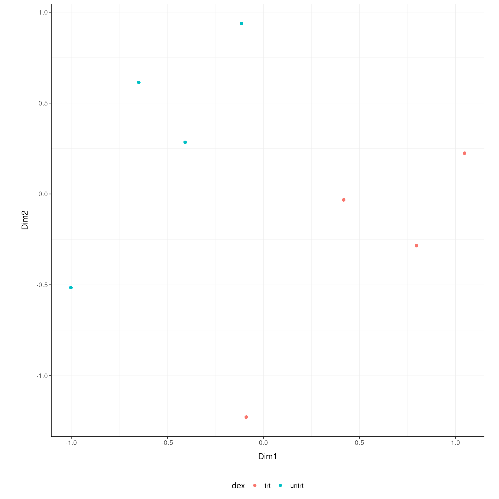
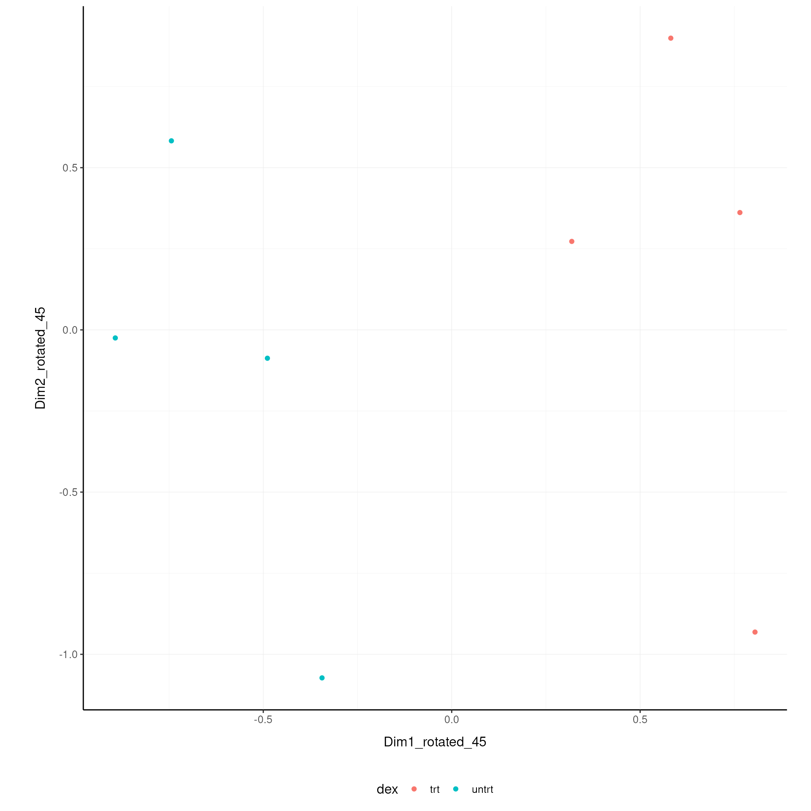

Side-by-side comparison with standard interfaces
Stefano Mangiola
2025-09-16
Source:vignettes/comparison_coding.Rmd
comparison_coding.Rmd


tidybulk is a powerful R package designed for modular transcriptomic data analysis that brings transcriptomics to the tidyverse.
Why tidybulk?
Tidybulk provides a unified interface for comprehensive transcriptomic data analysis with seamless integration of SummarizedExperiment objects and tidyverse principles. It streamlines the entire workflow from raw data to biological insights.
Scientific Citation
Mangiola, Stefano, Ramyar Molania, Ruining Dong, Maria A. Doyle, and Anthony T. Papenfuss. 2021. “Tidybulk: An R tidy framework for modular transcriptomic data analysis.” Genome Biology 22 (42). https://doi.org/10.1186/s13059-020-02233-7
Genome Biology - tidybulk: an R tidy framework for modular transcriptomic data analysis
In this vignette we will use the airway dataset, a
SummarizedExperiment object containing RNA-seq data from an
experiment studying the effect of dexamethasone treatment on airway
smooth muscle cells. This dataset is available in the airway package.
This workflow, will use the tidySummarizedExperiment
package to manipulate the data in a tidyverse fashion. This
approach streamlines the data manipulation and analysis process, making
it more efficient and easier to understand.
Here we will add a gene symbol column to the airway
object. This will be used to interpret the differential expression
analysis, and to deconvolve the cellularity.
library(org.Hs.eg.db)## Loading required package: AnnotationDbi##
## Attaching package: 'AnnotationDbi'## The following object is masked from 'package:dplyr':
##
## select##
library(AnnotationDbi)
# Add gene symbol and entrez
airway <-
airway |>
mutate(entrezid = mapIds(org.Hs.eg.db,
keys = gene_name,
keytype = "SYMBOL",
column = "ENTREZID",
multiVals = "first"
)) ## 'select()' returned 1:many mapping between keys and columnsSide-by-side Comparison with Standard Interfaces
This vignette demonstrates how tidybulk compares to standard R/Bioconductor approaches for transcriptomic data analysis. We’ll show the same analysis performed using both tidybulk (tidyverse-style) and traditional methods side by side.
Data Overview
We will use the airway dataset, a
SummarizedExperiment object containing RNA-seq data from an
experiment studying the effect of dexamethasone treatment on airway
smooth muscle cells:
airway## # A SummarizedExperiment-tibble abstraction: 509,416 × 23
## # Features=63677 | Samples=8 | Assays=counts
## .feature .sample counts SampleName cell dex albut Run avgLength
## <chr> <chr> <int> <fct> <fct> <fct> <fct> <fct> <int>
## 1 ENSG00000000003 SRR10395… 679 GSM1275862 N613… untrt untrt SRR1… 126
## 2 ENSG00000000005 SRR10395… 0 GSM1275862 N613… untrt untrt SRR1… 126
## 3 ENSG00000000419 SRR10395… 467 GSM1275862 N613… untrt untrt SRR1… 126
## 4 ENSG00000000457 SRR10395… 260 GSM1275862 N613… untrt untrt SRR1… 126
## 5 ENSG00000000460 SRR10395… 60 GSM1275862 N613… untrt untrt SRR1… 126
## 6 ENSG00000000938 SRR10395… 0 GSM1275862 N613… untrt untrt SRR1… 126
## 7 ENSG00000000971 SRR10395… 3251 GSM1275862 N613… untrt untrt SRR1… 126
## 8 ENSG00000001036 SRR10395… 1433 GSM1275862 N613… untrt untrt SRR1… 126
## 9 ENSG00000001084 SRR10395… 519 GSM1275862 N613… untrt untrt SRR1… 126
## 10 ENSG00000001167 SRR10395… 394 GSM1275862 N613… untrt untrt SRR1… 126
## # ℹ 40 more rows
## # ℹ 14 more variables: Experiment <fct>, Sample <fct>, BioSample <fct>,
## # gene_id <chr>, gene_name <chr>, entrezid <chr>, gene_biotype <chr>,
## # gene_seq_start <int>, gene_seq_end <int>, seq_name <chr>, seq_strand <int>,
## # seq_coord_system <int>, symbol <chr>, GRangesList <list>Loading tidySummarizedExperiment makes the
SummarizedExperiment objects compatible with tidyverse
tools while maintaining its SummarizedExperiment nature.
This is useful because it allows us to use the tidyverse
tools to manipulate the data.
class(airway)## [1] "RangedSummarizedExperiment"
## attr(,"package")
## [1] "SummarizedExperiment"Prepare Data for Analysis
Before analysis, we need to ensure our variables are in the correct format:
# Convert dex to factor for proper differential expression analysis
airway = airway |>
mutate(dex = as.factor(dex))Step 1: Aggregate Duplicated Transcripts
tidybulk provides the aggregate_duplicates function to
aggregate duplicated transcripts (e.g., isoforms, ensembl). For example,
we often have to convert ensembl symbols to gene/transcript symbol, but
in doing so we have to deal with duplicates.
aggregate_duplicates takes a tibble and column names (as
symbols; for sample, transcript and
count) as arguments and returns a tibble with transcripts
with the same name aggregated. All the rest of the columns are appended,
and factors and boolean are appended as characters.
Transcript aggregation is a standard bioinformatics approach for gene-level summarization.
TidyTranscriptomics
rowData(airway)$gene_name = rownames(airway)
airway.aggr = airway |> aggregate_duplicates(.transcript = gene_name)Standard procedure (comparative purpose)
Step 2: Scale Abundance
We may want to compensate for sequencing depth, scaling the
transcript abundance (e.g., with TMM algorithm, Robinson and Oshlack
doi.org/10.1186/gb-2010-11-3-r25). scale_abundance takes a
tibble, column names (as symbols; for sample,
transcript and count) and a method as
arguments and returns a tibble with additional columns with scaled data
as <NAME OF COUNT COLUMN>_scaled.
Normalization is crucial for comparing expression levels across samples with different library sizes.
TidyTranscriptomics
airway.norm = airway |> identify_abundant(factor_of_interest = dex) |> scale_abundance()## Warning: The `factor_of_interest` argument of `identify_abundant()` is deprecated as of
## tidybulk 2.0.0.
## ℹ Please use the `formula_design` argument instead.
## ℹ The argument 'factor_of_interest' is deprecated and will be removed in a
## future release. Please use the 'design' or 'formula_design' argument instead.
## This warning is displayed once every 8 hours.
## Call `lifecycle::last_lifecycle_warnings()` to see where this warning was
## generated.## tidybulk says: the sample with largest library size SRR1039517 was chosen as reference for scalingStandard procedure (comparative purpose)
library(edgeR)
dgList <- DGEList(count_m=x,group=group)
keep <- filterByExpr(dgList)
dgList <- dgList[keep,,keep.lib.sizes=FALSE]
# ... additional processing steps ...
dgList <- calcNormFactors(dgList, method="TMM")
norm_counts.table <- cpm(dgList)We can easily plot the scaled density to check the scaling outcome. On the x axis we have the log scaled counts, on the y axes we have the density, data is grouped by sample and coloured by treatment.
airway.norm |>
ggplot(aes(counts_scaled + 1, group=.sample, color=`dex`)) +
geom_density() +
scale_x_log10() +
my_theme
Step 3: Filter Variable Transcripts
We may want to identify and filter variable transcripts to focus on the most informative features.
Variable transcript filtering helps reduce noise and focuses analysis on the most informative features.
TidyTranscriptomics
airway.norm.variable = airway.norm |> keep_variable()## Getting the 500 most variable genesStandard procedure (comparative purpose)
Step 4: Reduce Dimensions
We may want to reduce the dimensions of our data, for example using
PCA or MDS algorithms. reduce_dimensions takes a tibble,
column names (as symbols; for sample,
transcript and count) and a method (e.g., MDS
or PCA) as arguments and returns a tibble with additional columns for
the reduced dimensions.
Dimensionality reduction helps visualize high-dimensional data and identify patterns.
MDS (Robinson et al., 10.1093/bioinformatics/btp616)
TidyTranscriptomics
airway.norm.MDS =
airway.norm |>
reduce_dimensions(method="MDS", .dims = 2)## Getting the 500 most variable genes## [1] "MDS result_df colnames: sample, 1, 2"## tidybulk says: to access the raw results do `metadata(.)$tidybulk$MDS`Standard procedure (comparative purpose)
On the x and y axes axis we have the reduced dimensions 1 to 3, data is coloured by treatment.
airway.norm.MDS |> pivot_sample() |> dplyr::select(contains("Dim"), everything())
airway.norm.MDS |>
pivot_sample() |>
GGally::ggpairs(columns = 9:11, ggplot2::aes(colour=`dex`))PCA
TidyTranscriptomics
airway.norm.PCA =
airway.norm |>
reduce_dimensions(method="PCA", .dims = 2)Standard procedure (comparative purpose)
On the x and y axes axis we have the reduced dimensions 1 to 3, data is coloured by treatment.
airway.norm.PCA |> pivot_sample() |> dplyr::select(contains("PC"), everything())
airway.norm.PCA |>
pivot_sample() |>
GGally::ggpairs(columns = 11:13, ggplot2::aes(colour=`dex`))Step 5: Rotate Dimensions
We may want to rotate the reduced dimensions (or any two numeric
columns really) of our data, of a set angle.
rotate_dimensions takes a tibble, column names (as symbols;
for sample, transcript and count)
and an angle as arguments and returns a tibble with additional columns
for the rotated dimensions. The rotated dimensions will be added to the
original data set as
<NAME OF DIMENSION> rotated <ANGLE> by default,
or as specified in the input arguments.
Dimension rotation can help align data with biological axes of interest.TidyTranscriptomics
airway.norm.MDS.rotated =
airway.norm.MDS |>
rotate_dimensions(`Dim1`, `Dim2`, rotation_degrees = 45)Standard procedure (comparative purpose)
Original On the x and y axes axis we have the first two reduced dimensions, data is coloured by treatment.
airway.norm.MDS.rotated |>
ggplot(aes(x=`Dim1`, y=`Dim2`, color=`dex` )) +
geom_point() +
my_theme
Rotated On the x and y axes axis we have the first two reduced dimensions rotated of 45 degrees, data is coloured by treatment.
airway.norm.MDS.rotated |>
pivot_sample() |>
ggplot(aes(x=`Dim1_rotated_45`, y=`Dim2_rotated_45`, color=`dex` )) +
geom_point() +
my_theme
Step 8: Test Differential Abundance
We may want to test for differential transcription between
sample-wise factors of interest (e.g., with edgeR).
test_differential_expression takes a tibble, column names
(as symbols; for sample, transcript and
count) and a formula representing the desired linear model
as arguments and returns a tibble with additional columns for the
statistics from the hypothesis test (e.g., log fold change, p-value and
false discovery rate).
Differential expression analysis identifies genes that are significantly different between conditions.TidyTranscriptomics
airway.de =
airway |>
test_differential_expression( ~ dex, method = "edgeR_quasi_likelihood") |>
pivot_transcript()
airway.deStandard procedure (comparative purpose)
library(edgeR)
dgList <- DGEList(counts=counts_m,group=group)
keep <- filterByExpr(dgList)
dgList <- dgList[keep,,keep.lib.sizes=FALSE]
dgList <- calcNormFactors(dgList)
design <- model.matrix(~group)
dgList <- estimateDisp(dgList,design)
fit <- glmQLFit(dgList,design)
qlf <- glmQLFTest(fit,coef=2)
topTags(qlf, n=Inf)The functon test_differential_expression operated with
contrasts too. The constrasts hve the name of the design matrix
(generally
airway.de =
airway |>
identify_abundant(factor_of_interest = dex) |>
test_differential_expression(
~ 0 + dex,
.contrasts = c( "dexuntrt - dextrt"),
method = "edgeR_quasi_likelihood"
) |>
pivot_transcript()Step 6: Adjust for Unwanted Variation
We may want to adjust counts for (known) unwanted
variation. adjust_abundance takes as arguments a tibble,
column names (as symbols; for sample,
transcript and count) and a formula
representing the desired linear model where the first covariate is the
factor of interest and the second covariate is the unwanted variation,
and returns a tibble with additional columns for the adjusted counts as
<COUNT COLUMN>_adjusted. At the moment just an
unwanted covariates is allowed at a time.
Batch effect correction is important for removing technical variation that could confound biological signals.
TidyTranscriptomics
airway.norm.adj =
airway.norm |> adjust_abundance( .factor_unwanted = cell, .factor_of_interest = dex, method="combat")Standard procedure (comparative purpose)
library(sva)
count_m_log = log(count_m + 1)
design =
model.matrix(
object = ~ factor_of_interest + batch,
data = annotation
)
count_m_log.sva =
ComBat(
batch = design[,2],
mod = design,
...
)
count_m_log.sva = ceiling(exp(count_m_log.sva) -1)
count_m_log.sva$cell_type = counts[
match(counts$sample, rownames(count_m_log.sva)),
"cell"
]Deconvolve Cell type composition
We may want to infer the cell type composition of our samples (with
the algorithm Cibersort; Newman et al., 10.1038/nmeth.3337).
deconvolve_cellularity takes as arguments a tibble, column
names (as symbols; for sample, transcript and
count) and returns a tibble with additional columns for the
adjusted cell type proportions.
Note: Cellularity deconvolution requires gene symbols that match the reference data. The airway dataset uses Ensembl IDs, so this example is commented out.
TidyTranscriptomics
# Requires gene symbols that match reference data
# airway.cibersort =
# airway |>
# deconvolve_cellularity( cores=1, prefix = "cibersort__") |>
# pivot_sample()Standard procedure (comparative purpose)
source("CIBERSORT.R")
count_m |> write.table("mixture_file.txt")
results <- CIBERSORT(
"sig_matrix_file.txt",
"mixture_file.txt",
perm=100, QN=TRUE
)
results$cell_type = tibble_counts[
match(tibble_counts$sample, rownames(results)),
"cell"
]Note: The plotting code is commented out as the deconvolution step is not executed.
# airway.cibersort |>
# pivot_longer(
# names_to= "Cell_type_inferred",
# values_to = "proportion",
# names_prefix ="cibersort__",
# cols=contains("cibersort__")
# ) |>
# ggplot(aes(x=Cell_type_inferred, y=proportion, fill=cell)) +
# geom_boxplot() +
# facet_wrap(~cell) +
# my_theme +
# theme(axis.text.x = element_text(angle = 90, hjust = 1, vjust = 0.5), aspect.ratio=1/5)Step 7: Cluster Samples
We may want to cluster our samples based on the transcriptomic
profiles. cluster_elements takes as arguments a tibble,
column names (as symbols; for sample,
transcript and count) and returns a tibble
with additional columns for the cluster labels.
Clustering helps identify groups of samples with similar expression profiles.
TidyTranscriptomics
airway.norm.cluster =
airway.norm |>
cluster_elements(method="kmeans", centers = 2)Standard procedure (comparative purpose)
Step 9: Test Differential Abundance (Alternative Method)
We may want to test for differential abundance between conditions.
test_differential_abundance takes as arguments a tibble,
column names (as symbols; for sample,
transcript and count) and a formula
representing the desired linear model, and returns a tibble with
additional columns for the statistics from the hypothesis test (e.g.,
log fold change, p-value and false discovery rate).
This demonstrates an alternative approach to differential expression analysis.
TidyTranscriptomics
airway.norm.de =
airway.norm |>
test_differential_abundance(~ dex, method="edgeR_quasi_likelihood")## tidybulk says: The design column names are "(Intercept), dexuntrt"## tidybulk says: to access the DE object do `metadata(.)$tidybulk$edgeR_quasi_likelihood_object`
## tidybulk says: to access the raw results (fitted GLM) do `metadata(.)$tidybulk$edgeR_quasi_likelihood_fit`Standard procedure (comparative purpose)
library(edgeR)
count_m_log = log(count_m + 1)
design = model.matrix(~ dex, data = annotation)
dge = DGEList(counts = count_m)
dge = calcNormFactors(dge)
dge = estimateDisp(dge, design)
fit = glmQLFit(dge, design)
qlf = glmQLFTest(fit, coef=2)
results = topTags(qlf, n = Inf)Conclusion
Tidybulk provides a unified interface for comprehensive transcriptomic data analysis with seamless integration of SummarizedExperiment objects and tidyverse principles. It streamlines the entire workflow from raw data to biological insights while maintaining compatibility with standard Bioconductor practices.
## R version 4.5.1 (2025-06-13)
## Platform: x86_64-pc-linux-gnu
## Running under: Ubuntu 24.04.2 LTS
##
## Matrix products: default
## BLAS: /usr/lib/x86_64-linux-gnu/openblas-pthread/libblas.so.3
## LAPACK: /usr/lib/x86_64-linux-gnu/openblas-pthread/libopenblasp-r0.3.26.so; LAPACK version 3.12.0
##
## locale:
## [1] LC_CTYPE=en_US.UTF-8 LC_NUMERIC=C
## [3] LC_TIME=en_US.UTF-8 LC_COLLATE=en_US.UTF-8
## [5] LC_MONETARY=en_US.UTF-8 LC_MESSAGES=en_US.UTF-8
## [7] LC_PAPER=en_US.UTF-8 LC_NAME=C
## [9] LC_ADDRESS=C LC_TELEPHONE=C
## [11] LC_MEASUREMENT=en_US.UTF-8 LC_IDENTIFICATION=C
##
## time zone: UTC
## tzcode source: system (glibc)
##
## attached base packages:
## [1] stats4 stats graphics grDevices utils datasets methods
## [8] base
##
## other attached packages:
## [1] airway_1.29.0 tidySummarizedExperiment_1.19.0
## [3] tidybulk_1.99.4 ttservice_0.5.3
## [5] SummarizedExperiment_1.39.1 Biobase_2.69.1
## [7] GenomicRanges_1.61.3 Seqinfo_0.99.2
## [9] IRanges_2.43.1 S4Vectors_0.47.1
## [11] BiocGenerics_0.55.1 generics_0.1.4
## [13] MatrixGenerics_1.21.0 matrixStats_1.5.0
## [15] ggrepel_0.9.6 ggplot2_4.0.0
## [17] forcats_1.0.0 magrittr_2.0.4
## [19] purrr_1.1.0 tibble_3.3.0
## [21] tidyr_1.3.1 dplyr_1.1.4
## [23] knitr_1.50 BiocStyle_2.37.1
##
## loaded via a namespace (and not attached):
## [1] DBI_1.2.3 rlang_1.1.6 compiler_4.5.1
## [4] RSQLite_2.4.3 mgcv_1.9-3 png_0.1-8
## [7] systemfonts_1.2.3 vctrs_0.6.5 sva_3.57.0
## [10] stringr_1.5.2 pkgconfig_2.0.3 crayon_1.5.3
## [13] fastmap_1.2.0 XVector_0.49.1 ellipsis_0.3.2
## [16] labeling_0.4.3 utf8_1.2.6 rmarkdown_2.29
## [19] ragg_1.5.0 bit_4.6.0 xfun_0.53
## [22] cachem_1.1.0 jsonlite_2.0.0 blob_1.2.4
## [25] DelayedArray_0.35.3 BiocParallel_1.43.4 parallel_4.5.1
## [28] R6_2.6.1 bslib_0.9.0 stringi_1.8.7
## [31] RColorBrewer_1.1-3 limma_3.65.4 genefilter_1.91.0
## [34] jquerylib_0.1.4 Rcpp_1.1.0 bookdown_0.44
## [37] splines_4.5.1 Matrix_1.7-4 tidyselect_1.2.1
## [40] abind_1.4-8 yaml_2.3.10 codetools_0.2-20
## [43] lattice_0.22-7 withr_3.0.2 KEGGREST_1.49.1
## [46] S7_0.2.0 evaluate_1.0.5 survival_3.8-3
## [49] desc_1.4.3 Biostrings_2.77.2 pillar_1.11.0
## [52] BiocManager_1.30.26 plotly_4.11.0 scales_1.4.0
## [55] xtable_1.8-4 glue_1.8.0 lazyeval_0.2.2
## [58] tools_4.5.1 data.table_1.17.8 annotate_1.87.0
## [61] locfit_1.5-9.12 XML_3.99-0.19 fs_1.6.6
## [64] grid_4.5.1 AnnotationDbi_1.71.1 edgeR_4.7.4
## [67] nlme_3.1-168 cli_3.6.5 textshaping_1.0.3
## [70] fansi_1.0.6 S4Arrays_1.9.1 viridisLite_0.4.2
## [73] gtable_0.3.6 sass_0.4.10 digest_0.6.37
## [76] SparseArray_1.9.1 htmlwidgets_1.6.4 farver_2.1.2
## [79] memoise_2.0.1 htmltools_0.5.8.1 pkgdown_2.1.3
## [82] lifecycle_1.0.4 httr_1.4.7 statmod_1.5.0
## [85] bit64_4.6.0-1